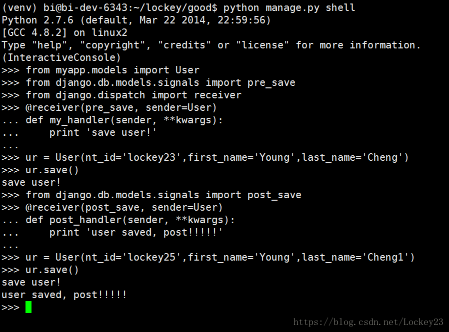

暂停十月，所有关于你的回忆，都让它留在十月
！！更新博客咯！！

正文：
在平时的开发过程中，我们会遇到一些特殊的应用场景，如果你想要在执行某种操作之前或者之后你能够得到通知，并对其进行一些你想要的操作时，你就可以用Django中的信号（signals）。Django 提供一个“信号分发器”，允许解耦的应用在框架的其它地方发生操作时会被通知到，也就是说在特定事件发生时，可以发送一个信号去通知所有注册了这个信号的回调，在回调里进行想要的操作处理。
使用方法图例
下面图例对具体的某个数据表进行监听，在请求前（pre_save）请求后（post_save），来发送信号。
@receiver 为连接接收器函数。

一.相关参数表
Django内置了对数据表，migrate命令，url请求相关（request/response），使用test测试，连接数据库五大类信号。
1 Model signals
2 pre_init # model执行构造方法前，触发
3 post_init# model执行构造方法后，触发
4 pre_save # model执行save对象保存前，触发
5 post_save# model执行save对象保存前，触发
6 pre_delete # model执行delete对象删除前，触发
7 post_delete # model执行delete对象删除前，触发
8 m2m_changed # model使用多对多字段操作第三张表前后，触发
9 class_prepared # 程序启动时，检测已注册的model类，对每个类，触发
10
11 Management signals
12 pre_migrate # 执行migrate前，触发
13 post_migrate # 执行migrate后，触发
14
15 Request/response signals
16 request_started # 请求到来前，触发
17 request_finished # 请求结束后，触发
18 got_request_exception# 请求异常后，触发
19
20 Test signals
21 setting_changed # 使用test测试修改配置文件，触发
22 template_rendered# 使用test测试渲染模板时，触发
23
24 Database Wrappers
25 connection_created # 创建数据库连接时，触发